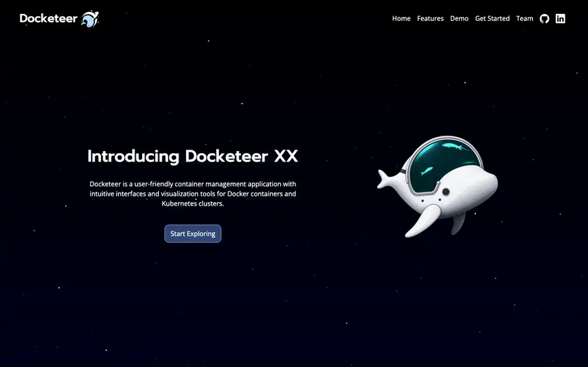
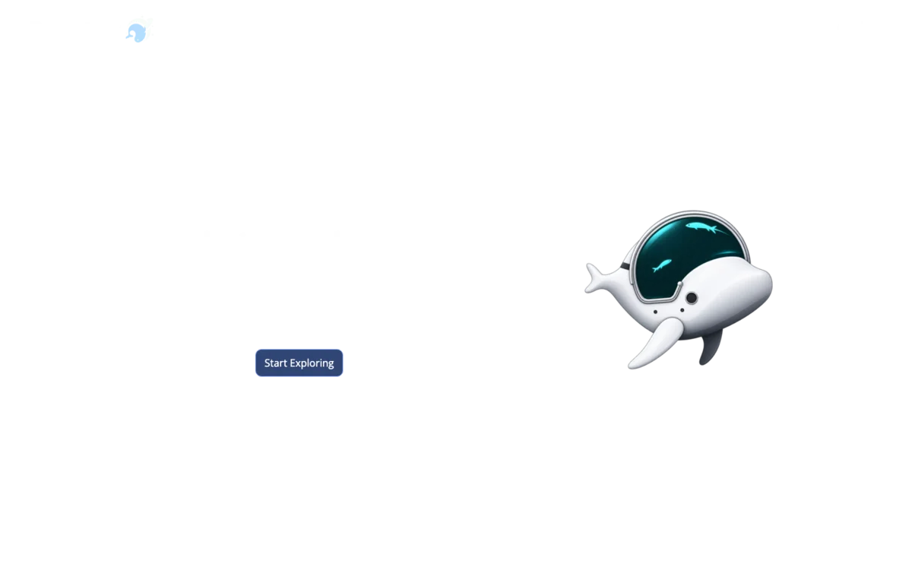

Performance score
Mobile +24 points
- Before
- 75 / 100
- After
- 99 / 100
Desktop +51 points
- Before
- 49 / 100
- After
- 100 / 100
Open-source frontend engineering
Modernizing Docketeer.io
I overhauled Docketeer’s public website, updating its aging stack and reworking how it loaded and displayed demos. The refactor brought the project from 31 to 19 direct dependencies. Payload fell 98.7% and performance score rose 104%.


The problem
Docketeer is an open-source tool for managing Docker containers and Kubernetes clusters.
The site had fallen behind on dependencies, and its legacy build and test setup had failing checks. Large videos downloaded before visitors needed them, pushing the initial mobile payload above 16,000 KiB. Page elements shifted while loading, mobile navigation was broken, and keyboard focus was unreliable. Before the release, the live site scored 75 on mobile and 49 on desktop out of 100 for performance in PageSpeed Insights.
Site modernization
Docketeer’s website now loads with far less data and is easier to use on mobile or with a keyboard. A lighter Canvas backdrop and optimized images reduce the work of loading the page. Demo videos wait until needed, and the player reserves space so the page stays steady as media loads. I repaired the mobile menu, section links, and keyboard focus, and added controls for playback and motion.
I updated React, Vite, and TypeScript, cut direct dependencies from 31 to 19, and reduced source and styles by 23% by consolidating shared code and simplifying stylesheets. I added unit and browser tests, GitHub Actions build checks, and production verification, and updated search and sharing metadata, the sitemap, and security headers.
Measured results
The production release passed 20 deployment artifact checks and 19 desktop and mobile smoke tests.